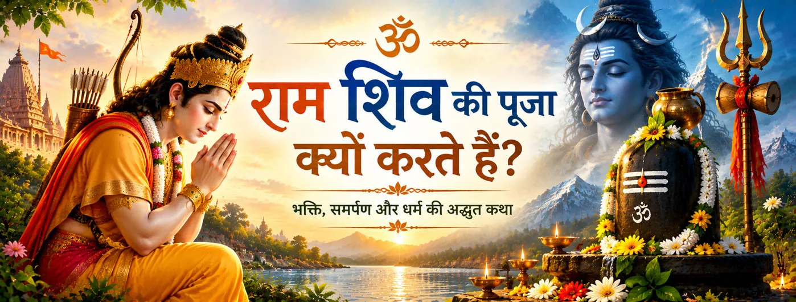

राम शिव के समक्ष नमन करते हैं
राम की पूजा श्रद्धा को एक पवित्र कर्म के रूप में सामने रखती है। राम द्वारा शिव का सम्मान करने की छवि दोनों परंपराओं के संबंध के केंद्र में विनय को स्थापित करती है।

भक्ति और प्रतीक
राम द्वारा शिव की पूजा राम–शिव भक्ति-परंपरा के सबसे अर्थपूर्ण संगमों में से एक है। रामेश्वरम् में राम को शिव के समक्ष नमन करते, पूजा अर्पित करते और दोनों दिव्य परंपराओं के बीच पवित्र संबंध स्थापित करते हुए स्मरण किया जाता है।
यह प्रसंग विशेष रूप से भक्तिपरक और बाद की राम–शिव परंपराओं में प्रमुख है। रामचरितमानस में लंका की ओर प्रस्थान से पहले राम द्वारा रामेश्वर की स्थापना का स्पष्ट वर्णन मिलता है, जबकि अन्य परंपराएँ पूजा के समय और लिंग-स्थापना के विवरण में भिन्न कथाएँ प्रस्तुत करती हैं।
चार आयाम
इस परंपरा को श्रद्धा, पवित्र उद्देश्य, विनय और विभिन्न भक्ति-मार्गों की एकता के माध्यम से समझा जा सकता है।
राम की पूजा श्रद्धा को एक पवित्र कर्म के रूप में सामने रखती है। राम द्वारा शिव का सम्मान करने की छवि दोनों परंपराओं के संबंध के केंद्र में विनय को स्थापित करती है।
रामेश्वरम् राम और शिव की संयुक्त भक्ति का शक्तिशाली प्रतीक बन गया। यह पवित्र स्थल रामनाथस्वामी से जुड़ा है और इसका नाम स्वयं राम के साथ संबंध को सुरक्षित रखता है।
बाद की पौराणिक और क्षेत्रीय परंपराएँ राम की शिव-पूजा को लंका-अभियान से पहले या बाद में दिव्य अनुग्रह की कामना से जोड़ती हैं। ये विवरण विशिष्ट ग्रंथों और मंदिर-परंपराओं से संबंधित हैं और इन्हें हर रामायण के समान रूप से नहीं माना जाना चाहिए।
राम की शिव-पूजा भक्ति की दो धाराओं के संगम के रूप में स्मरण की जाती है। इससे भक्त राम और शिव की श्रद्धा को एक व्यापक पवित्र दृष्टि की परस्पर संगत अभिव्यक्तियों के रूप में देख सकता है।
ग्रंथ-परंपराओं की परतें
राम–शिव कथा को उसके विभिन्न ग्रंथीय स्तरों को ध्यान में रखकर पढ़ना चाहिए। रामचरितमानस के लंकाकाण्ड में राम द्वारा रामेश्वर की स्थापना और उस पवित्र स्थल की आध्यात्मिक महिमा का स्पष्ट भक्तिपरक वर्णन मिलता है। इसी परंपरा में शिव की पूजा को राम की भक्ति से जोड़ा जाता है।
साथ ही, पूजा के स्थान, समय और लिंग-स्थापना के सटीक विवरण अलग-अलग रामायण-पाठों, पौराणिक ग्रंथों और स्थानीय मंदिर-परंपराओं में भिन्न मिलते हैं। इसलिए रामेश्वरम् प्रसंग को एक बहुस्तरीय पवित्र परंपरा के रूप में प्रस्तुत करना अधिक उचित है, न कि इस प्रकार कि हर रामायण स्रोत में कथा बिल्कुल एक ही रूप में मिलती है।
गहरा आध्यात्मिक अर्थ
राम द्वारा शिव की पूजा भक्त को स्मरण कराती है कि महानता और विनय साथ-साथ रह सकते हैं। पूजा श्रद्धा का दृश्य रूप बन जाती है।
भक्तिपरक साहित्य में राम और शिव को बार-बार परस्पर सम्मान के संबंध में रखा गया है। बाद की भक्ति-व्याख्याओं में यही हरि-हर समन्वय की एक आधारभूमि बनता है।
रामेश्वरम् ऐसा तीर्थ-परिदृश्य बन गया जहाँ राम-भक्ति और शिव-आराधना साथ-साथ अनुभव की जाती हैं। स्वयं पवित्र भूगोल इस कथा को धारण करता है।
राम–शिव संबंध केवल साहित्य में स्मरण की जाने वाली कथा नहीं है। यह रामेश्वरम् से जुड़ी तीर्थयात्रा, मंदिर-पूजा, कथा और भक्तिपरक स्मृति के माध्यम से आज भी जीवित परंपरा का हिस्सा है।
एक शांत चिंतन
यह दृश्य एक सरल चिंतन के लिए आमंत्रित करता है: जब ईश्वर का एक रूप दूसरे दिव्य रूप का सम्मान करता है, तो भक्ति छोटी नहीं होती। रामेश्वरम् में शिव के प्रति राम की श्रद्धा विनय, पवित्र आत्मीयता और भक्ति की एकता का स्थायी प्रतीक बन गई है।
भक्तों के सामान्य प्रश्न
भक्तिपरंपरा राम की पूजा को श्रद्धा और पवित्र उद्देश्य का कर्म बताती है। बाद की पौराणिक और क्षेत्रीय कथाओं में इसे शिव के अनुग्रह और शुद्धि की कामना से भी जोड़ा गया है।
नहीं। राम–शिव परंपराओं में अलग-अलग ग्रंथीय और क्षेत्रीय स्तर हैं। रामेश्वरम् की शिव-पूजा का प्रसंग भक्तिपरक और बाद के स्रोतों में विशेष रूप से प्रमुख है, इसलिए उसके विवरण को संबंधित परंपरा के साथ ही जोड़कर देखना चाहिए।
यह विनय, श्रद्धा और विभिन्न दिव्य रूपों का सम्मान करना सिखाती है, बिना भक्ति को प्रतिस्पर्धा मानने के। रामेश्वरम् इस समन्वय का शक्तिशाली पवित्र प्रतीक बन गया है।
जब वैष्णव परंपरा में विष्णु के अवतार माने जाने वाले राम शिव का सम्मान करते हैं, तो यह दृश्य परस्पर श्रद्धा का भक्तिपरक प्रतीक बन जाता है। बाद की परंपराएँ ऐसे संबंधों के माध्यम से वैष्णव और शैव भक्ति के समन्वय को व्यक्त करती हैं।